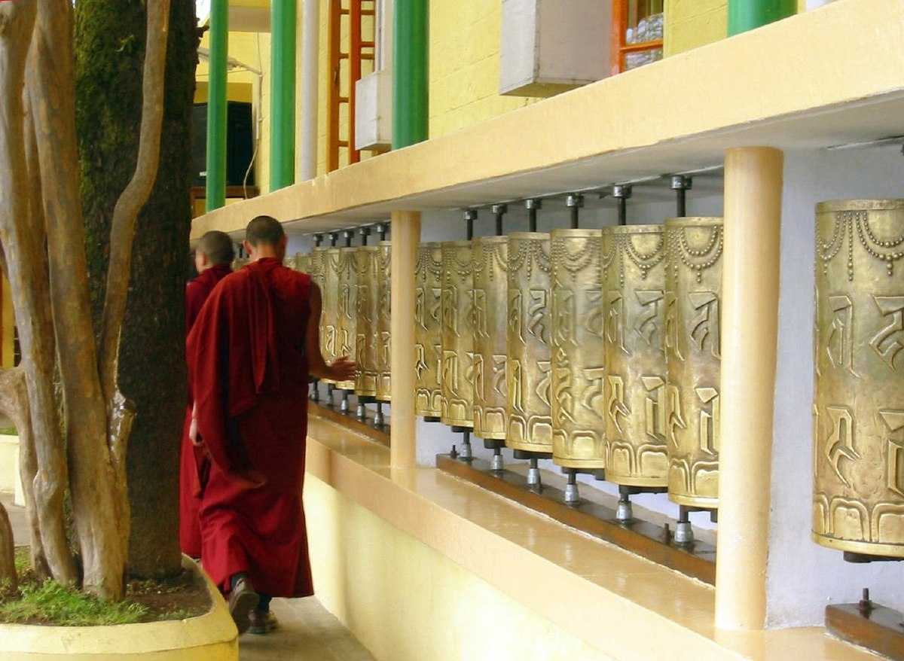
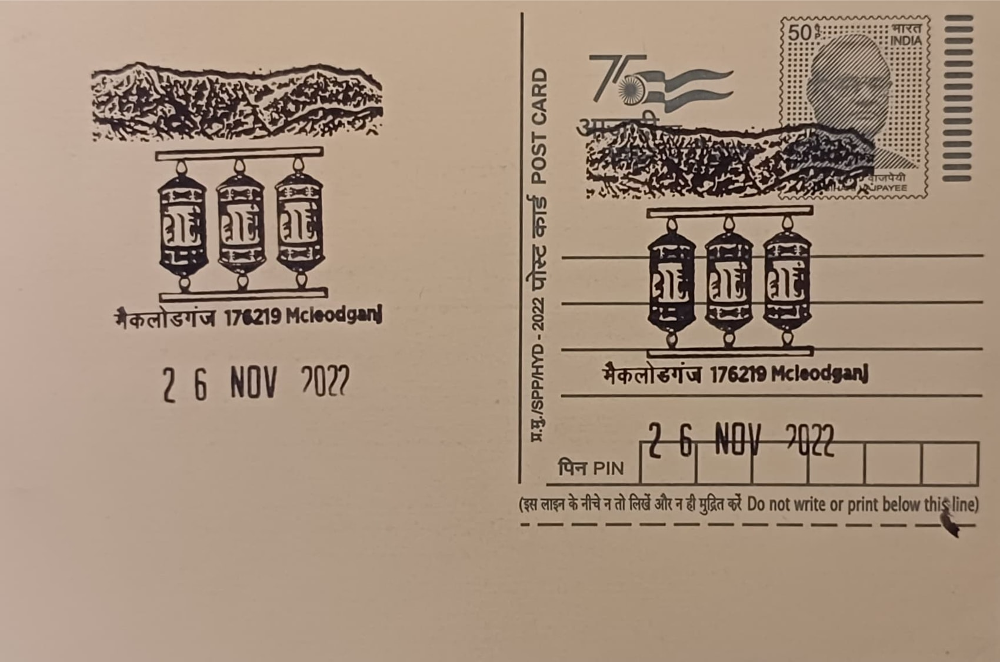

The term 'McLeodganj' derives from Sir Donald McLeod, a lieutenant governor of Punjab under British rule, while the suffix 'ganj' denotes a neighbourhood or market locality in several North Indian languages. Long before its association with Tibetan Buddhism, the settlement served as a minor British garrison and hill station above Dharamshala, nearly abandoned after the devastating Kangra earthquake of 1905. Its modern identity was reshaped after 1959, when the 14th Dalai Lama, Tenzin Gyatso, fled Tibet following the failed uprising against Chinese rule; Prime Minister Jawaharlal Nehru granted him refuge, and by 1960 the Central Tibetan Administration had relocated here, turning a quiet colonial outpost into the seat of Tibetan government-in-exile.
As a subject for pictorial cancellation, the Himalayas and the mani prayer wheel together represent the dual identity of McLeodganj as both a Himalayan mountain town and the foremost centre of Tibetan Buddhist practice outside Tibet. The mani wheel is a cylindrical drum inscribed with the six-syllable mantra Om Mani Padme Hum, invoking Avalokiteshvara, the bodhisattva of compassion, of whom the Dalai Lama is traditionally regarded as an emanation. Spinning the wheel clockwise while reciting or merely holding the mantra in mind is held to generate merit equivalent to vocalising the prayer itself, a practice rooted in Vajrayana Buddhist belief in the power of mantra repeated through both speech and mechanical motion, making the wheel a central devotional tool across Tibetan monastic life.
The principal religious institution anchoring this imagery is the Tsuglagkhang complex, home to the Namgyal Monastery, which traces its origins to 1564-65 when it was founded by the second Dalai Lama, Gendun Gyatso, on the site of the earlier Phende Gon monastery in Tibet, later renamed for the protective deity Namgyälma. Re-established in McLeodganj after 1959 and largely built through the 1960s by Tibetan craftsmen in exile, the present complex houses a temple modelled on the original Tsuglhakhang of Lhasa, alongside the Dalai Lama's residence, the Tibet Museum, and a courtyard enclosed by a kora, the circumambulation path lined with rows of prayer wheels and fluttering prayer flags, set directly beneath the jagged, snow-covered ridgeline of the Dhauladhar range of the Lower Himalayas.
A distinguishing feature of the site is the daily ritual movement along the kora itself: monks, elderly Tibetan refugees, and visiting pilgrims circle the temple complex in a steady clockwise procession, running their palms across dozens of wheels mounted along the perimeter wall so that each one spins in sequence, a practice that continues from early morning into the evening regardless of season. Namgyal Monastery today functions as the personal monastery of the 14th Dalai Lama and is considered the largest Tibetan Buddhist institution outside Tibet, housing several hundred monks who combine ritual duties with the monastery's role in preserving Tibetan liturgical, philosophical, and artistic traditions carried into exile over six decades ago.
The complex and its surrounding town remain administered jointly by the Namgyal Monastery authorities and the Central Tibetan Administration, which also oversees the adjoining Tibet Museum documenting the 1959 flight and subsequent refugee settlement across India. McLeodganj's combination of monastic ritual and mountain setting has made it one of Himachal Pradesh's most visited destinations, drawing both Buddhist pilgrims observing the kora and international travellers using the town as a base for trekking into the Dhauladhar range. The post office at Mcleodganj SO, serving PIN code 176215, sits within this same small but globally recognised township, linking its postal history directly to the community that has sustained Tibetan Buddhist practice in exile since 1959.
| Date of Introduction | November 26, 2022 |
|---|---|
| Address | Sub Postmaster, |
| Mcleodganj SO, | |
| Kangra (dt.), Himachal Pradesh - 176215. |